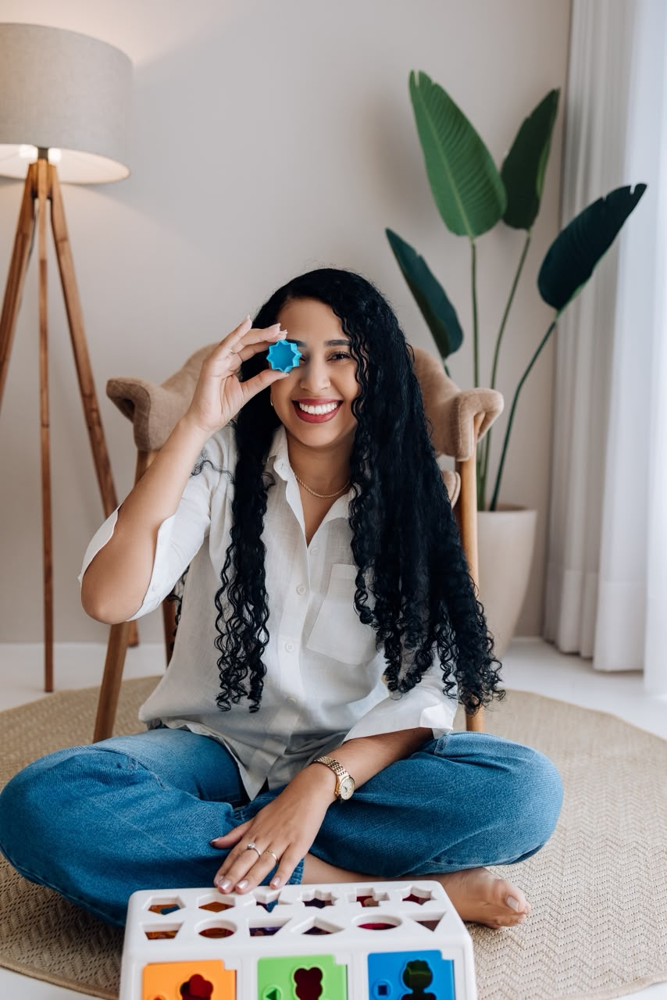
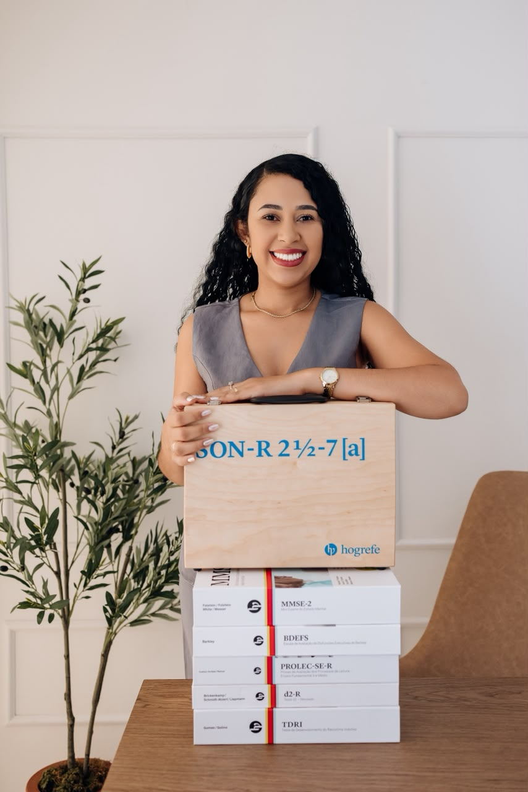

Avaliações detalhadas e individualizadas para crianças, adolescentes, adultos e idosos, conduzidas com ciência, ética e acolhimento humano.
Entenda, acolha e desenvolva o potencial em cada fase da vida. O protocolo de avaliação é adaptado para as necessidades específicas da idade.

Avaliação do desenvolvimento cognitivo, linguístico, emocional e comportamental (TDAH, TEA, dificuldades escolares).

Investigação de transtornos de aprendizagem, regulação emocional, comportamento e orientação acadêmica.
Avaliação de atenção, memória, diagnóstico tardio de TDAH/TEA, e declínio cognitivo precoce pós-eventos clínicos.
Rastreio de perdas de memória, avaliação das funções executivas e diagnóstico diferencial de demências (Alzheimer, etc).
Sem pressa. O diagnóstico não é um formulário, é uma escuta ativa. Veja as etapas da sua jornada.
Entrevista clínica aprofundada para entender o histórico, as queixas principais e o contexto de vida.
Aplicação de testes padronizados e validados cientificamente para mapear o funcionamento do cérebro.
Reunião de entrega e explicação detalhada do laudo, sem jargões. Você sai com clareza e direção.
Neuropsicóloga dedicada à avaliação do funcionamento cognitivo, emocional e comportamental de crianças, adolescentes, adultos e idosos.
Há 8 anos, meu propósito é compreender a história de cada paciente com profundidade e sensibilidade, oferecendo avaliações criteriosas, baseadas em evidências científicas, que geram clareza, acolhimento e direcionamento para as melhores decisões.